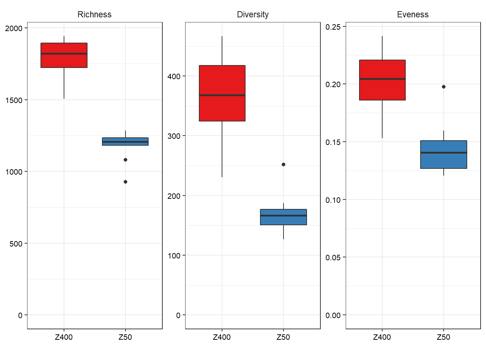
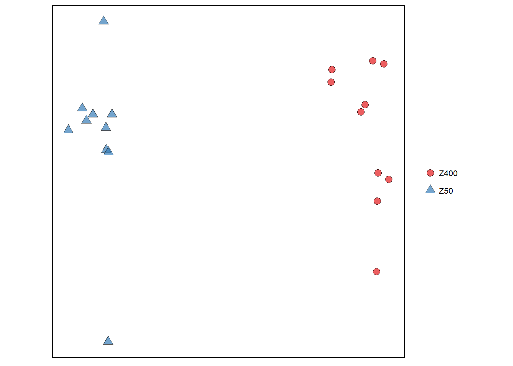
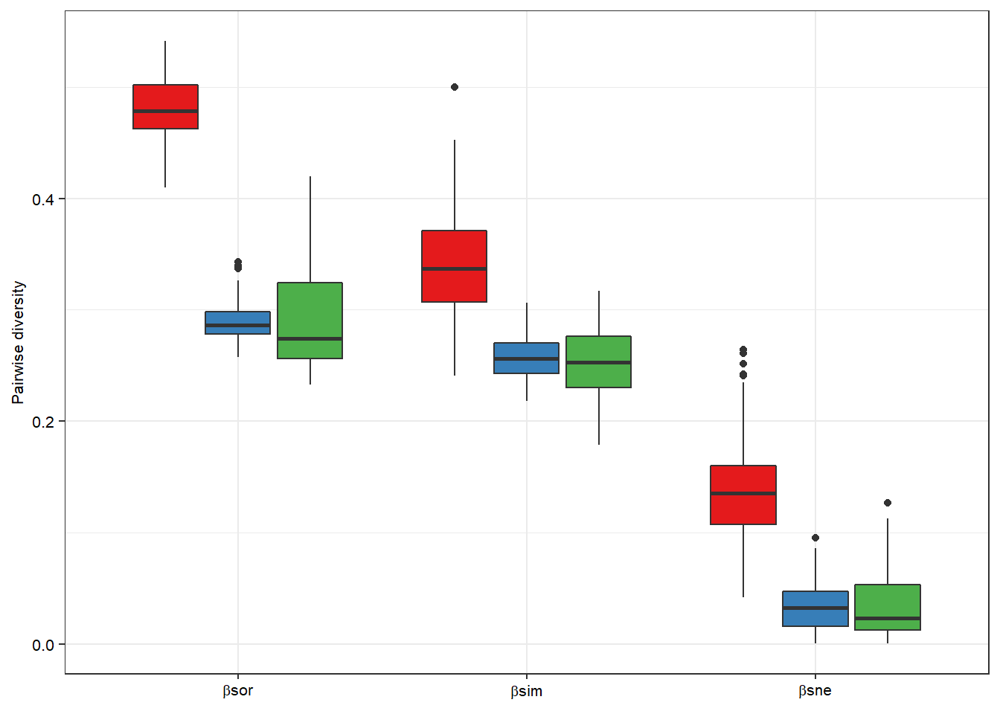
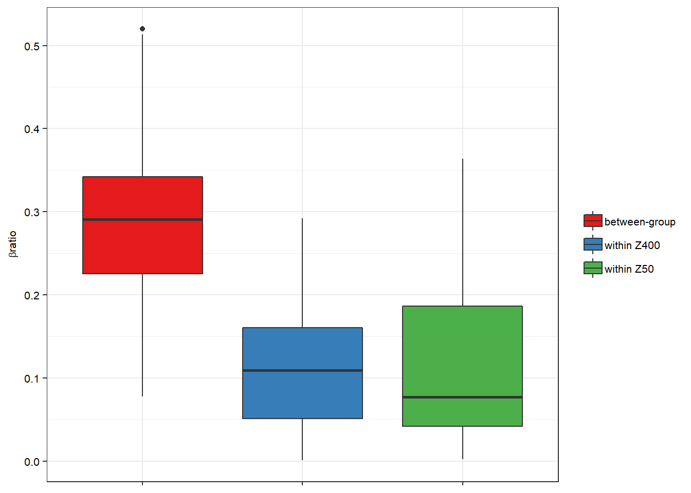
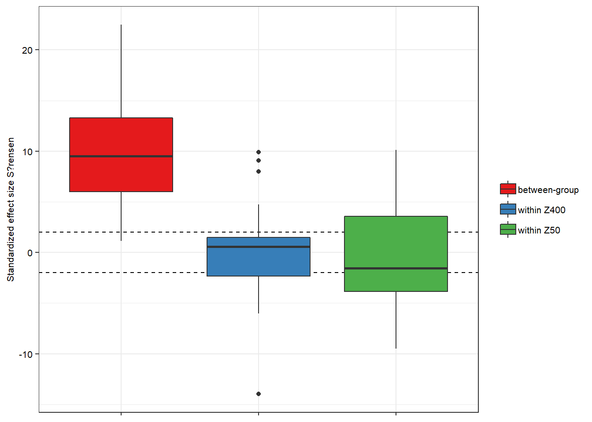

This is the code for Figures 2 and 3 from Suarez et al. 2019. Thickness determines microbial community structure and function in nitrifying biofilms via deterministic assembly. Scientific Reports. 9:5110
library(phyloseq)
library(vegan)
library(ggplot2)
library(dplyr)
library(tidyr)
library(tibble)I load the SV and tax table. SVs shorter than 200bp were excluded prior to analysis.
UNOISE_OTU_table <- read.csv("zotutable_otu_final.csv", header=TRUE, row.names = 1)
UNOISE_tax_table <- as.matrix(read.csv("zotutable_tax_final.csv", header=TRUE, row.names = 1, na.strings=""))
metadata = read.table("metadata.txt", sep="\t", header=TRUE, row.names=1) #load the metadata
#Phyloseq stuff
d <- phyloseq(otu_table(UNOISE_OTU_table, taxa_are_rows = TRUE),
tax_table(UNOISE_tax_table),
sample_data(metadata))Subsampling to even depth We are comparing samples with different sequencing depht, so subsampling to even depth (rarefy) might be a good idea. However some people think that subsampling is bad.
dr <- rarefy_even_depth(physeq = d,
rngseed = 712)## `set.seed(712)` was used to initialize repeatable random subsampling.## Please record this for your records so others can reproduce.## Try `set.seed(712); .Random.seed` for the full vector## ...## 104OTUs were removed because they are no longer
## present in any sample after random subsampling## ...#This function exports the OTU table to Vegan or others
veganotu = function(physeq) {
OTU = otu_table(physeq)
if (taxa_are_rows(OTU)) {
OTU = t(OTU)
}
return(as(OTU, "matrix"))
}
OTUS.vegan <- veganotu(dr) #The subsampled OTU table outside phyloseq. I will use this later#I get some alpha diversity indicators with Phyloseq
Z_div = estimate_richness(dr, measures=c("Observed", "Shannon"))
Z_div = Z_div %>%
rownames_to_column(var="names") %>%
mutate(Carrier = sample_data(dr)$Carrier) %>% #I add the carrier type
mutate(D1 = exp(Shannon)) %>% #True diversity (Effective number of species)
mutate(E1 = D1/Observed) %>%
select(-Shannon) %>%
gather(key=Metric, value=Measurement, c("Observed", "D1", "E1"))This is Figure 2A
Z_div$Metric <- as.factor(Z_div$Metric)
Z_div$Metric = factor(Z_div$Metric,levels(Z_div$Metric)[c(3, 1, 2)])
alpha_names <- as_labeller(c(
`Observed` = "Richness",
`D1` = "Diversity",
`E1` = "Eveness"))
ggplot(Z_div, aes(Carrier, Measurement)) +
facet_wrap(~ Metric, labeller = alpha_names, scales = "free") +
geom_boxplot(aes(fill=Carrier)) +
theme_bw() +
theme(axis.text = element_text(colour = "black", size = 8),
axis.title = element_blank(),
legend.text = element_text(colour = "black", size = 8),
legend.title = element_blank(),
strip.background = element_blank(),
legend.position = "none") +
scale_fill_brewer(palette = "Set1") +
expand_limits(y = 0)
Welch T-test* P-values
Observed
t.test(Measurement ~ Carrier, data = filter(Z_div, Metric=="Observed"))$p.value## [1] 4.193674e-09D1
t.test(Measurement ~ Carrier, data = filter(Z_div, Metric=="D1"))$p.value## [1] 3.95994e-06E1
t.test(Measurement ~ Carrier, data = filter(Z_div, Metric=="E1"))$p.value## [1] 7.472015e-05We use the baselga framework. We estimate pairwise beta-diversity, and its components.
Please see Baselga 2010. Partitioning the turnover and nestedness components of beta diversity
library(betapart)
OTUS.vegan_bin <- as.matrix(OTUS.vegan)
OTUS.vegan_bin[OTUS.vegan_bin > 0] <- 1 #Binary
#Baselga
beta_core_bin_Z <- betapart.core(OTUS.vegan_bin)
beta_pair_bin_Z <- beta.pair(beta_core_bin_Z, index.family="sorensen")Ordination - Simpson index. This is figure 2B
#Source: A phyloseq object
#Distance.matrix: A distance matrix, for example Bray-curtis or Sorensen
caro.ord.PCoA <- function(Source=dr, Distance.matrix) {
ordu = ordinate(Source, "PCoA", distance=Distance.matrix) #Phyloseq, makes an ordination
ordu.data = plot_ordination(Source, ordu, justDF=TRUE) #Data for the Ordination
#Here I plot the ordination
qr <- ggplot(ordu.data, aes(Axis.1, Axis.2)) +
geom_point(size = 3,
alpha=0.7,
aes(shape=factor(Carrier), #My environmental variable is carrier type
fill=factor(Carrier)),
stroke=0.5) +
scale_shape_manual(values = c(21, 24)) + #I want shapes also
theme_bw() +
theme(panel.border = element_rect(colour = "black"),
aspect.ratio=1,
axis.ticks = element_blank(),
panel.grid = element_blank(),
axis.text = element_text(size =7, color = "black"),
axis.title = element_blank(),
axis.text.x = element_blank(),
axis.text.y = element_blank(),
legend.title = element_blank(),
legend.text = element_text(size =8, color = "black"),
legend.position="right") +
scale_fill_brewer(type = "qual", palette = "Set1") #I love colorbrewer
return(qr)
}
#Figure 2B
caro.ord.PCoA(dr, beta_pair_bin_Z$beta.sor)
#We convert the dist to a matrix
DIST_TO_MATRIX <- function(Source, Type) {
#@Source = a dist object
#@Type = a description of the dist matrix
library(reshape2)
RC_mod <- as.matrix(Source)
RC_mod <- melt(RC_mod)[melt(lower.tri(RC_mod))$value,]
names(RC_mod) <- c("c1", "c2", "distance")
qr = RC_mod %>%
mutate(Carrier=paste(substr(c1, 1, 3), substr(c2, 1, 3), sep="_"))
qr$type <- Type
return(qr)
detach("package:reshape2", unload=TRUE)
}
beta_pair_bin_Z.sor <- DIST_TO_MATRIX(beta_pair_bin_Z$beta.sor, "Total")
beta_pair_bin_Z.sne <- DIST_TO_MATRIX(beta_pair_bin_Z$beta.sne, "Nestedness")
beta_pair_bin_Z.sim <- DIST_TO_MATRIX(beta_pair_bin_Z$beta.sim, "Turnover")This is figure 3B
#We put all together
beta_pair_bin_Z.all <- beta_pair_bin_Z.sor %>%
bind_rows(beta_pair_bin_Z.sne) %>%
bind_rows(beta_pair_bin_Z.sim)
#Reorder levels
#pairwise comparisons
beta_pair_bin_Z.all$Carrier <- as.factor(beta_pair_bin_Z.all$Carrier)
beta_pair_bin_Z.all$Carrier = factor(beta_pair_bin_Z.all$Carrier,levels(beta_pair_bin_Z.all$Carrier)[c(2,1,3)])
#Beta partition
beta_pair_bin_Z.all$type <- as.factor(beta_pair_bin_Z.all$type)
beta_pair_bin_Z.all$type = factor(beta_pair_bin_Z.all$type,levels(beta_pair_bin_Z.all$type)[c(2,3,1)])
ggplot(beta_pair_bin_Z.all, aes(y=distance, x=type)) +
geom_boxplot(aes(fill=Carrier)) +
theme_bw() +
theme(axis.text = element_text(colour = "black", size = 8),
axis.title = element_text(colour = "black", size = 8),
legend.text = element_text(colour = "black", size = 8),
legend.title = element_blank(),
strip.background = element_blank(),
#axis.text.x=element_blank(),
axis.title.x=element_blank(),
legend.position = "none") +
scale_color_brewer(palette = "Set1") +
labs(y="Pairwise diversity", fill="Carrier") +
scale_x_discrete(labels=c(expression(beta*"sor"),
expression(beta*"sim"),
expression(beta*"sne"))) +
#scale_x_discrete("Carrier type pairwise comparisons") +
scale_fill_brewer(palette = "Set1", labels=c("within Z400", "within Z50", "between-group")) 
Beta diversity ratio: Figure 3C
beta_pair_bin_Z.com <- dplyr::rename(beta_pair_bin_Z.sor, sorensen = distance)
beta_pair_bin_Z.com$nestedness <- beta_pair_bin_Z.sne$distance
beta_pair_bin_Z.com <- beta_pair_bin_Z.com %>%
mutate(B.ratio = nestedness/sorensen)
#Reorder levels
#pairwise comparisons
beta_pair_bin_Z.com$Carrier <- as.factor(beta_pair_bin_Z.com$Carrier)
beta_pair_bin_Z.com$Carrier = factor(beta_pair_bin_Z.com$Carrier,levels(beta_pair_bin_Z.com$Carrier)[c(2,1,3)])
ggplot(beta_pair_bin_Z.com, aes(y=B.ratio, x=Carrier)) +
geom_boxplot(aes(fill=Carrier)) +
#geom_jitter(width = 0.25, height = 0, size=2, fill="white", alpha=0.5) +
theme_bw() +
theme(axis.text = element_text(colour = "black", size = 8),
axis.title = element_text(colour = "black", size = 8),
legend.text = element_text(colour = "black", size = 8),
legend.title = element_blank(),
strip.background = element_blank(),
axis.text.x=element_blank(),
axis.title.x=element_blank(),
legend.position = "right") +
scale_fill_brewer(palette = "Set1", labels=c("between-group",
"within Z400",
"within Z50")) +
labs(y= expression(beta*"ratio"), fill="Carrier")
Sorensen
adonis(beta_pair_bin_Z$beta.sor ~ Carrier, metadata, perm=999)##
## Call:
## adonis(formula = beta_pair_bin_Z$beta.sor ~ Carrier, data = metadata, permutations = 999)
##
## Permutation: free
## Number of permutations: 999
##
## Terms added sequentially (first to last)
##
## Df SumsOfSqs MeanSqs F.Model R2 Pr(>F)
## Carrier 1 0.76548 0.76548 17.823 0.49753 0.001 ***
## Residuals 18 0.77309 0.04295 0.50247
## Total 19 1.53858 1.00000
## ---
## Signif. codes: 0 '***' 0.001 '**' 0.01 '*' 0.05 '.' 0.1 ' ' 1Simpson
adonis(beta_pair_bin_Z$beta.sim ~ Carrier, metadata, perm=999)##
## Call:
## adonis(formula = beta_pair_bin_Z$beta.sim ~ Carrier, data = metadata, permutations = 999)
##
## Permutation: free
## Number of permutations: 999
##
## Terms added sequentially (first to last)
##
## Df SumsOfSqs MeanSqs F.Model R2 Pr(>F)
## Carrier 1 0.30102 0.301020 9.1336 0.33661 0.001 ***
## Residuals 18 0.59324 0.032958 0.66339
## Total 19 0.89426 1.00000
## ---
## Signif. codes: 0 '***' 0.001 '**' 0.01 '*' 0.05 '.' 0.1 ' ' 1Beta-diversity due to nestedness
adonis(beta_pair_bin_Z$beta.sne ~ Carrier, metadata, perm=999)##
## Call:
## adonis(formula = beta_pair_bin_Z$beta.sne ~ Carrier, data = metadata, permutations = 999)
##
## Permutation: free
## Number of permutations: 999
##
## Terms added sequentially (first to last)
##
## Df SumsOfSqs MeanSqs F.Model R2 Pr(>F)
## Carrier 1 0.094826 0.094826 84.966 0.82519 0.001 ***
## Residuals 18 0.020089 0.001116 0.17481
## Total 19 0.114915 1.00000
## ---
## Signif. codes: 0 '***' 0.001 '**' 0.01 '*' 0.05 '.' 0.1 ' ' 1I use a model with fixed rows and columns (Fixed richness and incidence). the algorithm I use is quasiswap. This might not be the best null model, nor the best algorithm. It might be too conservative, and fixed-fixed models have some issues. Use with caution.
Important! To recreate the plots from Suarez et al (2019) use nsimul = 999
#Regional species pool
sordist <- function(x) vegdist(x, binary=TRUE)
#quasiswap might be better than swap.
#thin can reduce the bias of null models.
#Use nsimul = 999
z_null_sor <- oecosimu(OTUS.vegan, sordist, method = "quasiswap", nsimul = 9, thin=1000)## Warning in oecosimu(OTUS.vegan, sordist, method = "quasiswap", nsimul =
## 9, : nullmodel transformed 'comm' to binary dataUsing local species pool for within comparisons. Here I look at Z50 carriers
d.z50 = subset_samples(d, Carrier=="Z50")
OTUS.vegan.z50 = veganotu(d.z50)
z_null_sor.z50 <- oecosimu(OTUS.vegan.z50, sordist, method = "quasiswap", nsimul = 9, thin=1000)## Warning in oecosimu(OTUS.vegan.z50, sordist, method = "quasiswap", nsimul =
## 9, : nullmodel transformed 'comm' to binary dataUsing local species pool for within-group comparisons.Here I look at Z400 carriers
d.z400 = subset_samples(d, Carrier=="Z400")
OTUS.vegan.z400 = veganotu(d.z400)
z_null_sor.z400 <- oecosimu(OTUS.vegan.z400, sordist, method = "quasiswap", nsimul = 9, thin=1000)## Warning in oecosimu(OTUS.vegan.z400, sordist, method = "quasiswap", nsimul
## = 9, : nullmodel transformed 'comm' to binary dataThis is Figure 3A. With local species pool for within-group comparisons. Regional pool for between-group comparison
#I want the Z-values (SES)
beta_pair_z_null_sor.z50 <- DIST_TO_MATRIX(z_null_sor.z50$oecosimu$z, "within Z50")
beta_pair_z_null_sor.z400 <- DIST_TO_MATRIX(z_null_sor.z400$oecosimu$z, "within Z400")
beta_pair_z_null_sor <- DIST_TO_MATRIX(z_null_sor$oecosimu$z, "between-group") %>%
filter(Carrier == "Z40_Z50")
beta_pair_bin_Z.all <- beta_pair_z_null_sor %>%
bind_rows(beta_pair_z_null_sor.z50) %>%
bind_rows(beta_pair_z_null_sor.z400)
ggplot(beta_pair_bin_Z.all, aes(x=type, y=distance, fill=type)) +
geom_hline(yintercept = -2, color="black", linetype = 2) +
geom_hline(yintercept = 2, color="black", linetype = 2) +
geom_boxplot() +
theme_bw() +
theme(axis.text = element_text(colour = "black", size = 8),
axis.title = element_text(colour = "black", size = 8),
legend.text = element_text(colour = "black", size = 8),
legend.title = element_blank(),
strip.background = element_blank(),
axis.text.x=element_blank(),
axis.title.x=element_blank(),
legend.position = "right") +
labs(y="Standardized effect size S?rensen", fill="type") +
scale_fill_brewer(palette = "Set1")